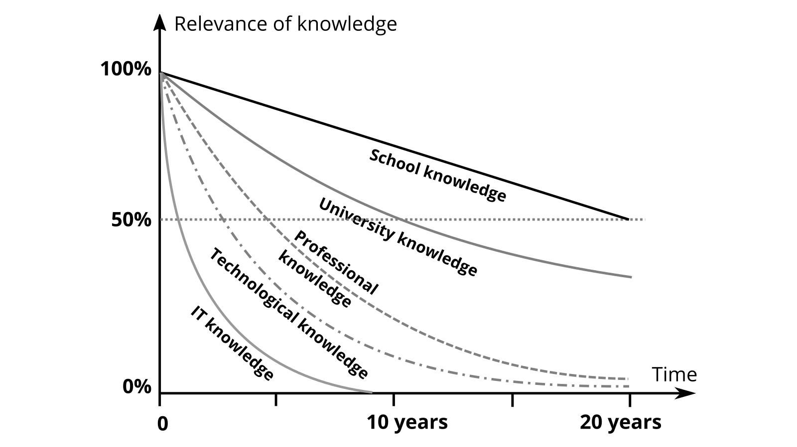

Learn something new today - why should I?
Simon Dückert (Cogneon)
Table Of Contents
- Why learning today gets more and more important
- The rise of knowledge workers
- How AI affects learning
- Where to start?
- A checklist for getting in action
In the past half-life of knowledge was long
The Knowledge Society
In the knowledge society of the 21st century half-life of knowledge decreased for a lot of knowledge domains.

Knowledge Work (P. Drucker)
- Knowledge-worker productivity demands that we ask the question: “What is the task?”
- It demands that we impose the responsibility for their productivity on the individual knowledge workers themselves. Knowledge workers have to manage themselves. They have to have autonomy.
- Continuing innovation has to be part of the work, the task and the responsibility of knowledge workers.
- Knowledge work requires continuous learning on the part of the knowledge worker, but equally continuous teaching on the part of the knowledge worker.
- Productivity of the knowledge worker is not—at least not primarily—a matter of the quantity of output. Quality is at least as important.
- Finally, knowledge-worker productivity requires that the knowledge worker is both seen and treated as an “asset” rather than a “cost.” It requires that knowledge workers want to work for the organization in preference to all other opportunities.
Knowledge Intensive Tasks

Osborne/Frey (2013):
The Future of Employment

Task Automation


Where Should I Start?
The HBR artikel Where Should Your Company Start with GenAI? provides a framwork to analyse tasks that will be highly affected by GenAI.

Finally: A Checklist For You ✅
- Create a list of your tasks (if not available)
- Identify knowledge intensive tasks
- Identify tasks affected by GenAI (WINS)
- Identify topics you have to learn something about
- Create a To-Learn-List similar to your To-Do-List
- Plan some learning time on a daily of weekly basis
- Review your approch regularly